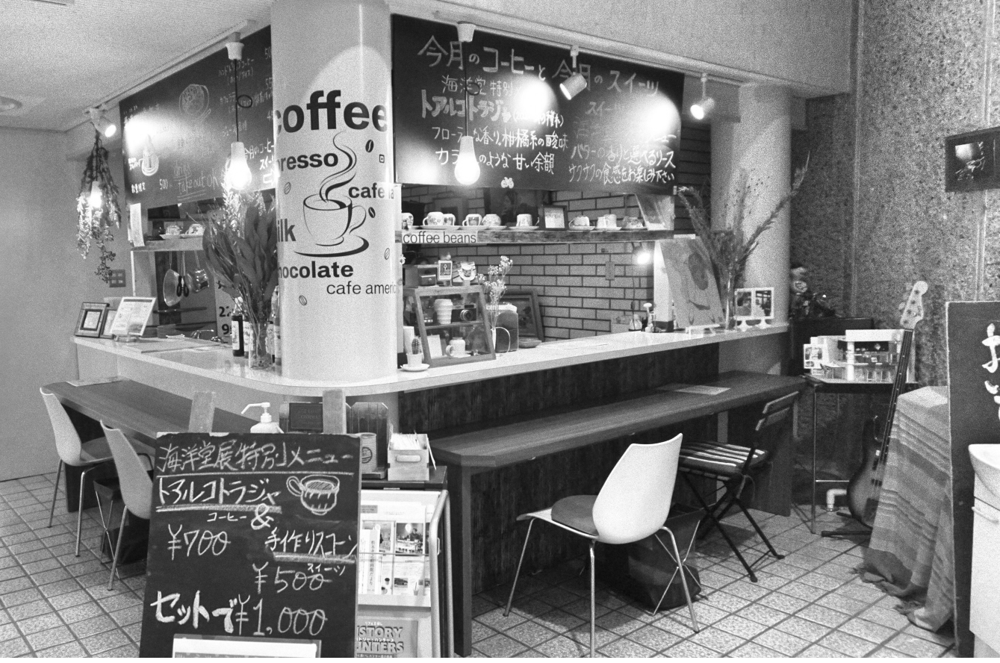

COFFEE
ART
TALK
RECORD
ART
TALK
RECORD
CONCEPT
佐世保市博物館島瀬美術センター1階に店を構えるノマドコーヒー。
佐世保の美術館の中にある珈琲屋ということで、コーヒーカップは佐世保にこだわり「三川内焼」「現川焼」でそろえました。
もちろんコーヒーにもこだわっています。
店主が厳選した豆を注文が入ってから挽き、丁寧に丁寧に抽出しています。
アートとレコードに囲まれて口当たりの良い器で美味しいコーヒーを。
レコードは持ち込みも歓迎いたします。
街中でほっと一息いかがですか?
※ドリンクはテイクアウトOK。